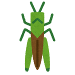
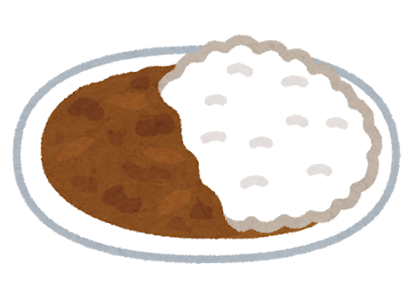

Game of Tones
¡Aprende sobre tonos en el zapoteco de Santiago Laxopa!
En el zapoteco de Santiago Laxopa, las palabras tienen melodías diferentes. Por ejemplo, en algunas palabras, el tono empieza alto y termina bajo, y en otras palabras, el tono se queda bajo y plano durante toda la palabra.
En esta página, puedes jugar al nuestro "Juego de Tonos", donde puedes aprender unas palabras del zapoteco de Santiago Laxopa, y puedes practicar cómo se escuchan sus melodías.
Para empezar, intenta si puedes escuchar la diferencia entre las dos palabras de abajo: beku' "perro" y beye' "nieve". Haz clic en las cajas azules para oír las palabras y escuchar sus melodías.

Puedes oír cómo beku' empieza alto y luego decrece, y beye' se queda muy plano? Estas son dos de las melodías que las palabras pueden tener en el zapoteco de Santiago Laxopa.
Abajo, vamos a dar algunas palabras más. Intenta determinar qué palabras tienen qué melodías.
Primera Etapa
Las seis palabras de abajo son ejemplos de dos melodías diferentes. ¡Ve si puedes determinar cuál es cuál!


Las palabras beku' "perro", xhua' "maíz", y xhile' "borrego" tienen la misma melodía, que empieza alta y termina baja. Las palabras beye' "nieve", lage' "hoja", and ya'ado "montaña" tienen una melodía diferente, que se queda plana y baja.
Segunda Etapa
Ahora, veamos algunas palabras más. Cuatro de estas palabras tienen las melodías que oíste en la primera etapa, pero tres tienen una melodía nueva. Intenta oír qué palabras tienen la melodía nueva.






Las palabras yu'u "casa" y biche' "chapulín" tienen la misma melodía descendente como beku', y ya'a "mercado" y yi'inhdo' "mole" tienen la misma melodía plana como beye'. Las tres otras palabras (duah "agave", yixu' "aguacate", and yu'u "cal") tienen la melodía nueva, que empieza baja y termina alta.
¿Observaste que aunque las palabras para casa y cal se escriben igual, puedes distinguirlas por sus melodías diferentes?
¿Cómo te fue? ¿Fue difícil oír las melodías? Si no hablas un idioma tonal, ¡puede ser difícil distinguirlas! Pero en idiomas tonales, como el zapoteco de Santiago Laxopa, esto es sólo una parte más del habla diario.
Este juego fue creado por Nido de Lenguas, una colaboración entre Senderos y lingüistas de la Universidad de California, Santa Cruz. Nuestra misión es compartir la belleza y valor de los idiomas oaxaqueños como el zapoteco de Santiago Laxopa. Visita nuestro sitio para aprender más, y registrarte para clases gratuitas sobre el zapoteco de Santiago Laxopa.